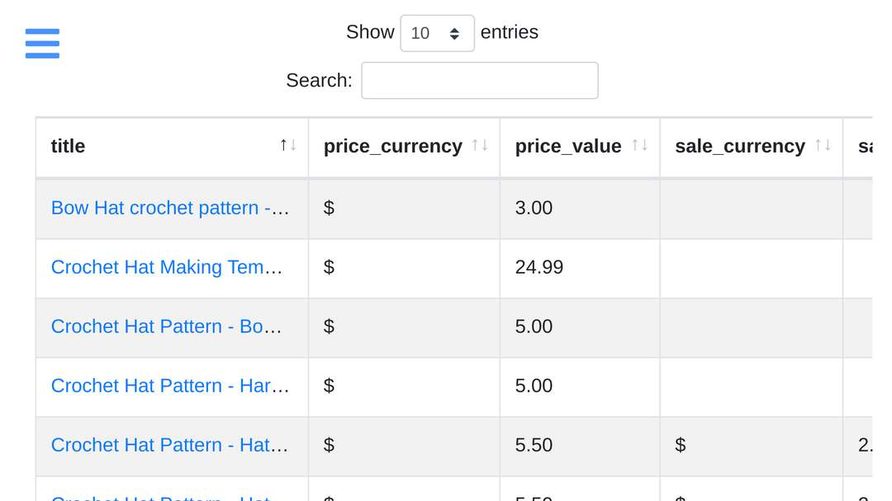
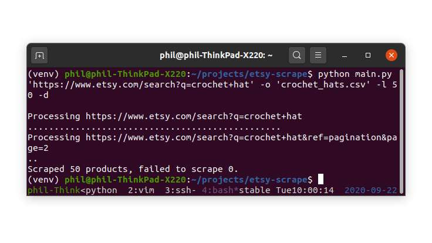

Etsy Scraper
Scrapes product data from Etsy for analysis
Extract product data from Etsy, cleans, and stores into a CSV file for analysis.
The implementation has been designed with future extensions in mind to include additional sites. Includes solid features such as the storing of CSS selectors for data alongside lambda testing functions for that data.
Package design allows implementation inside a simple CLI application (provided in source) or integrating into full web application (see demo).




Features
- PEP8 checked and well commented
- Handles connection errors cleanly with paced retry attempts
- Callback functions to show progress
- message alerts and failures
- Writes CSV files during execution to prevent data loss in the event of unforeseen exceptions
- Optional use of memcached
- 100% test coverage at time of writing
- Exceptions wrapped at each level of execution to ease integration